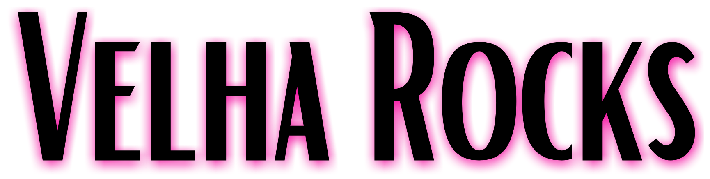
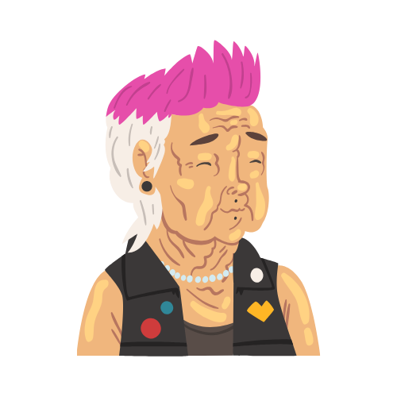

{{game._player1._name}} Vs {{game._player2._name}}
{{message}}
Convide seus amigos do WhatsApp
Convidar
O Jogo da Velha
No século 19, era comum as senhoras se reunirem para jogar noughts and crosses (zeros e cruzes) enquanto bordavam e conversavam. Foi assim que o passatempo virou “jogo das velhas” e depois simplificado para “jogo da velha”. Mas também pode chamar de cerquilha, jogo do galo ou tic-tac-toe.
Não se sabe a origem exata do jogo da velha, apesar de terem sido achadas esculturas em rochas datadas do antigo egito que se assemelham a tabuleiros do jogo da velha.
Também existem relatos/lendas que Predro Alvares Cabral gostava de jogar Jogo da Velha durante as navegações, e seria esse o primeiro jogo ensionado aos povos indíginas pelos portugueses.
Sabe-se também que faz parte dos jogos conhecidos como “família do moinho” ou “trilha” – nos quais o objetivo é posicionar as peças de modo que formem uma linha reta. Há também versões em que variam os números de linhas e colunas, geralmente três ou cinco. Conhecido praticamente em todo o mundo, o jogo varia de nome conforme a região.
Com tudo, o Jogo da Velha é um passatempo bastante antigo e fácil de se ensinar que vem passando por gerações e ainda hoje é bem divertido. Por ter regras muito claras e simples pessoas de todas as idades podem jogar e se divertir.
Para que um dos jogadores seja considerado vitorioso, é necessário que ocupe 3 posições do tabuleiro em sequencia, seja linha, coluna ou diagonal.
Em jogos entre participantes mais experinetes é normal que o resultado seja o empate, ou como popularmente se diz, "deu velha".
Um jogador pode facilmente jogar um jogo perfeito seguindo as seguintes regras por ordem de prioridade:
- 1. Ganhar: Se você tem duas peças numa linha, ponha a terceira.
- 2. Bloquear: Se o oponente tiver duas peças em linha, ponha a terceira para bloqueá-lo.
- 3. Triângulo: Crie uma oportunidade em que você poderá ganhar de duas maneiras.
- 4. Bloquear o Triângulo do oponente:
- Opção 1: Crie 2 peças em linha para forçar o oponente a se defender, contanto que não resulte nele criando um triângulo ou vencendo. Por exemplo, se 'X' tem dois cantos opostos do tabuleiro e 'O' tem o centro, 'O' não pode jogar num canto (Jogar no canto nesse cenário criaria um triângulo em que 'X' vence).
- Opção 2: Se existe uma configuração em que o oponente pode formar um triângulo, bloqueiem-no.
- 5. Centro: Jogue no centro.
- 6. Canto vazio: jogue num canto vazio.
Fontes:
https://pt.wikipedia.org/wiki/Jogo_da_velha
https://super.abril.com.br/mundo-estranho/qual-e-a-origem-do-jogo-da-velha/
https://super.abril.com.br/blog/oraculo/por-que-o-jogo-da-velha-tem-esse-nome/
Sobre o Velha Rocks

O Velha Rocks, o Jogo da Velha mais "Rocks" da internet, foi criado por Paulo Bezerra, fundador da CodDev Cursos, e foi mostrado passo-a-passo do seu desenvolvimento para os inscritos no canal do YouTube da CodDev TV . O código base para o site que você está vendo agora pode ser encontrado no GitHub da CodDev pleo link: https://github.com/CodDev2018/JogoDaVelha.
Não pense que esse é apenas um jogo bobo como tantos outros por ai, o grande ponto é que ele conecta dois jogadores em tempo real utilizando WebSocket, uma tecnologia que permite dados trafegarem tanto do cliente para o servidor quanto do servidor para o cliente, para saber mais assista a série Jogo da Velha no YouTube.
Para ver mais trabalhos do Paulo Bezerra e todos os Cursos da CodDev, veja: coddev.com.br.